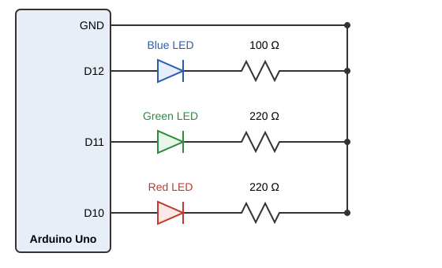
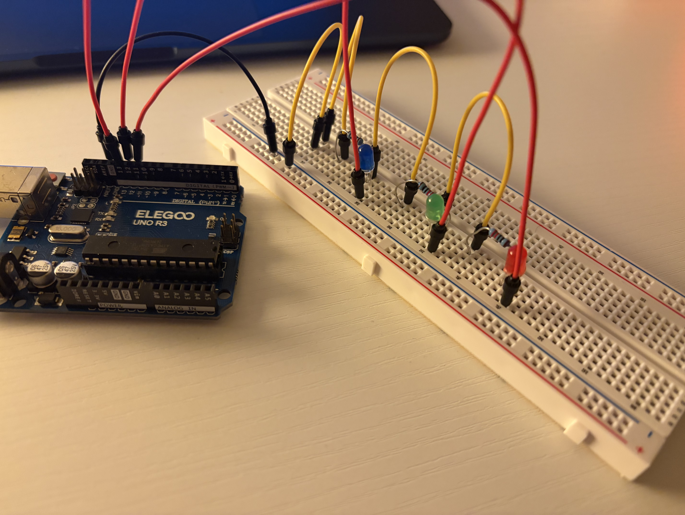
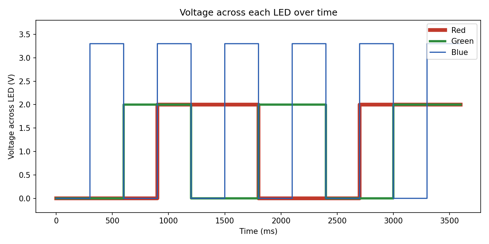

Three LEDs (red, green, blue) blink independently on an Arduino Uno in a waltz-like pattern.

The Arduino pin outputs 5 V when HIGH, the forward voltages are 2.0 V (red), 2.0 V (green), and 3.3 V (blue), and the LEDs are rated for about 20 mA. The Arduino limits are 40 mA per pin and 150 mA total.
Kirchhoff's voltage law around each branch gives Vpin - VR - Vf = 0, so VR = 5 V - Vf. Ohm's law then gives R = VR / I. Using the 20 mA LED rating as the maximum current gives the smallest resistor allowed:
| LED | Vf | VR = 5 - Vf | Minimum R at 20 mA | Resistor used | Current, I = VR / R |
|---|---|---|---|---|---|
| Red | 2.0 V | 3.0 V | 3.0 / 0.020 = 150 Ω | 220 Ω | 3.0 / 220 = 13.6 mA |
| Green | 2.0 V | 3.0 V | 3.0 / 0.020 = 150 Ω | 220 Ω | 3.0 / 220 = 13.6 mA |
| Blue | 3.3 V | 1.7 V | 1.7 / 0.020 = 85 Ω | 100 Ω | 1.7 / 100 = 17.0 mA |

// Number of LEDs in the circuit
const int NUM_LEDS = 3;
// Arduino pins connected to the red, green, and blue LEDs
const int ledPins[NUM_LEDS] = {10, 11, 12};
// Time in milliseconds each LED stays on or off before toggling
const int intervals[NUM_LEDS] = {900, 600, 300};
// Milliseconds counted so far for each LED
int timers[NUM_LEDS] = {0, 0, 0};
// the setup function runs once when you press reset or power the board
void setup() {
// Step through every LED
for (int i = 0; i < NUM_LEDS; i++) {
// Set this LED's pin as an output
pinMode(ledPins[i], OUTPUT);
}
}
// loop() runs over and over forever
void loop() {
// Wait 1 millisecond so each pass of the loop counts as one tick
delay(1);
// Step through every LED
for (int i = 0; i < NUM_LEDS; i++) {
// Add one millisecond to this LED's timer
timers[i]++;
// Check whether this LED's timer has reached its interval
if (timers[i] >= intervals[i]) {
// Set the pin to the opposite of its current state
digitalWrite(ledPins[i], !digitalRead(ledPins[i]));
// Reset this LED's timer back to 0
timers[i] = 0;
}
}
}
Each LED has its own timer that counts up one millisecond per loop pass.
When a timer reaches its LED's interval, the code flips that LED's pin and
resets the timer to 0. Because each LED has its own timer, they blink
independently, and the 1 ms delay() is short enough that it
does not block the other LEDs. Each timer resets before it passes 900, so
it never grows large.

The total across all pins must stay under 150 mA.
My LEDs draw 13.6 to 17.0 mA each, so about 10 of them could be on at the same time before reaching 150 mA. To run all 20 pins at once, each LED could draw at most 150 / 20 = 7.5 mA. For a red LED that needs R = (5 - 2.0) / 0.0075 = 400 Ω, so a 400 Ω resistor gives 7.5 mA per LED and 20 × 7.5 = 150 mA total.
I could no longer see blinking at about 50 Hz (20 ms per cycle, and frequency = 1000 / cycle time (20ms) = 50 Hz). At slower speeds, around 20 to 30 Hz, I could still see a flicker, and the LED looked steady once the speed went above about 50 Hz.
I used claude to help with the python code to generate the graph of the voltages.